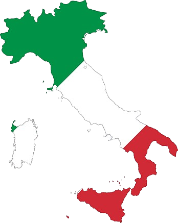

A culinária italiana é uma das mais saborosas do mundo. Com pratos que envolvem os mais variados tipos de vegetais, carnes e massas, não há quem resista aos encantos desta gastronomia.
Todo este sabor tem origem na própria história do país. Com o passar dos séculos, a história e a culinária italiana evoluíram juntos.
